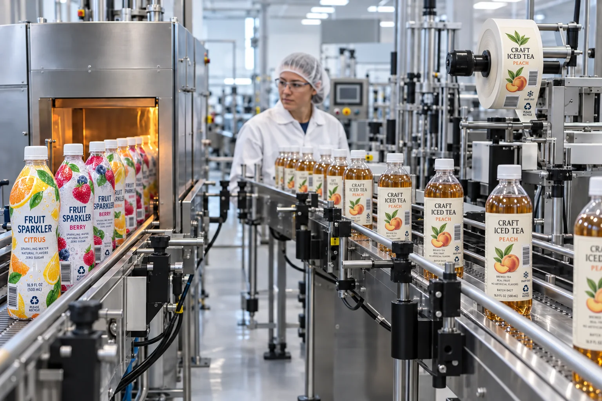

Short answer
Choose shrink sleeves for complex bottle shapes and 360-degree coverage; choose pressure-sensitive labels for stable panels, faster SKU changes and many short-to-medium runs. Neither format is automatically cheaper or more premium once equipment, application and waste are included.
We manufacture pressure-sensitive labels, so our natural bias is obvious. They are flexible, familiar and easy to quote. But a deeply waisted bottle does not care about our product catalog. If it offers no stable label panel, a shrink sleeve may be the honest winner.
How the formats behave
| Decision factor | Shrink sleeve | Pressure-sensitive label |
|---|---|---|
| Container shape | Conforms around shoulders, waists and curves | Prefers a flat or gently curved label panel |
| Graphic area | Can cover most or all of the container | Uses one or more defined panels |
| Application | Sleeve placement plus controlled heat | Peel from liner and press onto surface |
| SKU changes | More process setup to manage | Often simpler for short runs and many artworks |
| Tamper feature | Can extend over closure | Usually needs a separate seal or feature |
Two bottles that should not receive the same answer
Composite scenario one: a beverage startup has a straight 300 ml bottle, four flavors and uncertain sales. The design leaves the product visible. Pressure-sensitive roll labels win because the brand can order by SKU, change artwork and apply a front/back set without buying a heat tunnel.
Scenario two: a mature drink uses a dramatic hourglass bottle and wants uninterrupted graphics from shoulder to base. A rectangular adhesive label either stops short or fights the curve. The sleeve supplier wins that order, and should. A flat label is not improved by pretending the bottle is flat.
The cost is bigger than the printed piece
Compare total applied cost: printed material, tooling, line setup, applicator, heat, changeover labor, start-up waste and inventory by SKU. A sleeve can replace multiple decorated panels and a tamper band. A pressure-sensitive label can reduce launch commitment and simplify artwork changes.
- Sleeves spread setup and equipment cost more comfortably over stable volume.
- Pressure-sensitive labels reduce risk when demand and artwork are still moving.
- Manual application can favor adhesive labels for pilots.
- High-speed lines require format-specific trials, not a spreadsheet assumption.
Artwork behaves differently on a sleeve
A shrink sleeve does not simply wrap a rectangular design around a bottle. Graphics must be distorted before printing so they appear correct after shrinking over different diameters. Small text, barcodes and faces placed in high-shrink zones can change noticeably.
Pressure-sensitive artwork is more direct, but it still needs a dieline, safe area and fit test. The edge location becomes the visible engineering detail. On a sleeve, distortion is the hidden engineering detail.
Factory-side view
More graphic area is not always more communication
A full sleeve gives the designer a large canvas. It also gives the designer more places to put information the customer will never turn the bottle to read.
Coverage is useful when the bottle shape or brand system needs it. Otherwise, exposed glass or PET can be part of the design rather than unused space.
Recycling and removal need an early decision
Both formats affect the recycling path. Sleeve material, coverage and perforation can matter; pressure-sensitive face stock and adhesive can matter. Ask what guidance applies to the bottle resin and sales market before locking the format. A late sustainability review can force changes to artwork, material and line setup at once.
What to send for a format comparison
- Empty and filled bottle samples or dimensioned drawings.
- Annual volume and quantity per SKU.
- Required graphic coverage and tamper feature.
- Application equipment, line speed and available heat process.
- Cold, wet, hot-fill or abrasion conditions.
- Recycling goals and destination market.
If the bottle is tapered but still uses adhesive labels, read Labels for Tapered Bottles. For short-run economics, compare Custom Labels vs Printed Packaging.
Frequently asked questions
What is the main difference between shrink sleeves and pressure-sensitive labels?
A shrink sleeve is a printed film tube that contracts around a container under heat. A pressure-sensitive label has adhesive and is pressed onto a stable part of the container.
Which is better for a contoured bottle?
Shrink sleeves usually handle strong contours and full-body coverage better. Pressure-sensitive labels can work when the bottle provides a sufficiently flat or gently curved panel.
Which format is better for short runs?
Pressure-sensitive labels often suit short runs and frequent SKU changes because application and inventory can be simpler. The exact economics depend on size, quantity, equipment and finishing.
Can a shrink sleeve provide tamper evidence?
A sleeve can extend over a cap or closure to create a tamper-evident feature, but the design, perforation, application and regulatory requirements must be planned as a system.
Related label guides
- Labels for HDPE and PP Containers: Adhesive Guide
- Direct Thermal vs Thermal Transfer Labels
- Hot Foil vs Cold Foil vs Metallic Ink Labels
Review the complete label construction
Send the package photos, material, finished label size, quantity by artwork, storage conditions and application method. We can review fit, material and production details before preparing a quote and digital proof.